Chemical Bonding 3
Topic 2 · Chemical Bonding Part 3
On this page
- Intermolecular forces
- Instantaneous dipole-induced dipole forces (id-id)
- Permanent dipole-permanent dipole forces (pd-pd)
- Hydrogen bonding
- The importance of hydrogen bonding
- Bonding in the elements of Period 3
- Lattice structures of crystalline solids
- Bonding and physical properties
- Deducing structure and bonding from properties
Intermolecular forces
Parts 1 and 2 dealt with the strong bonds within a molecule (intramolecular bonds). Covalent molecules are also attracted to each other, by much weaker intermolecular forces. These decide whether a simple molecular substance is a solid, liquid or gas at room temperature, and how easily it melts, boils or dissolves.
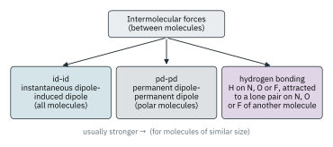
Instantaneous dipole-induced dipole forces (id-id)
These forces are also called London dispersion forces (‘van der Waals forces’ is a wider term that covers pd-pd forces as well); 9476 calls them instantaneous dipole-induced dipole (id-id) forces. They are weak electrostatic attractions between instantaneous dipoles and the dipoles they induce.
The theory of id-id forces. At any given moment, the electron cloud surrounding even a noble gas atom may not be perfectly symmetrical. One side then carries a slight negative charge and the other a slight positive charge: an instantaneous dipole. This dipole polarises the electron cloud of a neighbouring molecule, inducing a dipole in it, and the two dipoles attract. A moment later the electrons have moved, and the dipoles appear elsewhere, but on average there is always a net attraction.
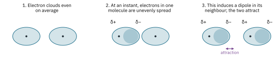
Since all molecules contain electrons, id-id forces exist between all molecules, polar or not. They are the only forces between non-polar molecules and between noble gas atoms.
What makes id-id forces stronger
- More electrons. A larger molecule has more electrons, and its outer electrons are further from the nuclei, so its electron cloud is larger and more easily distorted (more polarisable). Larger instantaneous and induced dipoles form, and the attraction is stronger.
- Larger surface area of contact. Long, unbranched molecules can touch along more of their length than compact, branched ones.
| Example | Boiling point / °C | Reason |
|---|---|---|
| He, Ne, Ar, Kr, Xe (liquid noble gases) | −269, −246, −186, −153, −108 | More electrons down the group, stronger id-id |
| Cl2(l), Br2(l), I2(s) | −34, 59, 184 | More electrons; Br2 is a liquid and I2 a solid at room temperature |
| pentane, CH3(CH2)3CH3 | 36 | Same number of electrons (C5H12); the unbranched chain has more surface contact |
| 2,2-dimethylpropane, C(CH3)4 | 10 |
Permanent dipole-permanent dipole forces (pd-pd)
Permanent dipole-permanent dipole (pd-pd) forces are attractions between molecules that have permanent dipoles, set up by differences in electronegativity (Part 2). The δ+ end of one molecule attracts the δ− end of its neighbour.
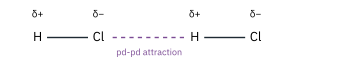
HCl molecules, for example, have a dipole because the hydrogen atom has a slight positive charge and the chlorine atom a slight negative charge. Liquid trichloromethane, CHCl3(l), is another example: CHCl3 is a polar molecule (Part 2), so pd-pd forces act between its molecules, in addition to id-id forces.
Polar molecules have both id-id and pd-pd forces. The pd-pd forces are not always the larger part. HBr is less polar than HCl, yet HBr boils at −67 °C and HCl at −85 °C: HBr has more electrons, so stronger id-id forces, and these outweigh its weaker pd-pd forces. So compare molecules of similar size when you use pd-pd forces to explain a difference.
Hydrogen bonding
Hydrogen bonding is the strongest type of intermolecular force (roughly 5 to 40 kJ mol−1, compared with several hundred for a covalent bond). It is a special, extreme case of a permanent dipole attraction.
N, O and F are the most electronegative elements in the periodic table. When hydrogen is bonded to one of them, the bonding pair is pulled so far away that the hydrogen nucleus (a single proton, with no inner electrons to shield it) is left very exposed and strongly δ+. It can approach close to a lone pair on a small, electronegative N, O or F atom of a neighbouring molecule and be strongly attracted to it.
- The hydrogen must be bonded directly to N, O or F. In CH4, or in the CH3 groups of methanol, the H atoms cannot form hydrogen bonds.
- The other molecule must have a lone pair on N, O or F.
- The three atoms X–H···Y lie in a straight line (about 180°), which gives the strongest attraction.
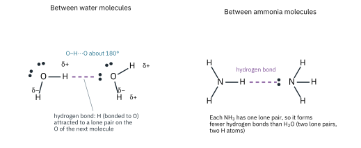
How many hydrogen bonds? Each H2O molecule has two H atoms and two lone pairs, so it can form on average two hydrogen bonds per molecule (four around each molecule in ice, each shared with a neighbour). NH3 has three H atoms but only one lone pair, and HF three lone pairs but only one H atom: each can form on average only one hydrogen bond per molecule. This is why water has the highest boiling point of the three (H2O 100 °C, HF 20 °C, NH3 −33 °C).
The importance of hydrogen bonding
Boiling points of the hydrides
Within each group, the boiling points of the hydrides rise down the group as the number of electrons (and so the strength of id-id forces) increases. NH3, H2O and HF break the pattern: they boil at far higher temperatures than the trend predicts, because extra energy is needed to break the hydrogen bonds between their molecules. The Group 14 hydrides (CH4 to SnH4) have no hydrogen bonding and follow the trend all the way.
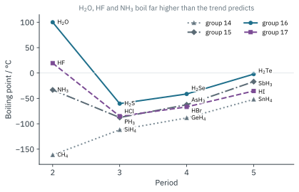
Ice is less dense than water
In ice, every water molecule is hydrogen-bonded to four others, arranged tetrahedrally around it: two through its own H atoms and two through its lone pairs. The hydrogen bonds hold the molecules at fixed distances in an open lattice with a lot of empty space.
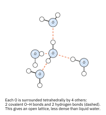
When ice melts, only a small fraction of the hydrogen bonds (roughly 15 %) break. The open structure partly collapses and the molecules can pack more closely, so liquid water is denser than ice (ice 0.92 g cm−3; water 1.00 g cm−3). Water is densest at 4 °C. As a result, ice floats, and lakes freeze from the top down. The layer of ice insulates the water below, where aquatic life can survive the winter.
Hydrogen bonding also explains the unusually high surface tension and viscosity of water, and why substances with –OH or –NH groups (ethanol, glucose, ammonia) are so soluble in water: they form hydrogen bonds with the water molecules.
Bonding in the elements of Period 3
Since atoms of the same element have no difference in electronegativity, bonding in the elements cannot be ionic, and pd-pd forces and hydrogen bonding are not possible. Only metallic bonding, covalent bonding and id-id forces are available. Which one an element uses depends on its electronegativity, so the bonding changes across a period.
- Na, Mg, Al: giant metallic. These are electropositive elements. From sodium to aluminium, the metallic bonding gets stronger (more delocalised electrons per atom; smaller, more highly charged ions).
- Si: giant molecular (giant covalent). By silicon, the effective nuclear charge is high enough to hold the bonding electrons in covalent bonds between the nuclei. Each Si atom is covalently bonded to four others in a three-dimensional network, like diamond. Silicon has a shiny, metallic look and is a semiconductor, but its bonding is covalent.1
- P, S, Cl: simple molecular. The atoms form small molecules, P4, S8 and Cl2, held together by weak id-id forces. S8 (more electrons) melts higher than P4; Cl2 is a gas.
- Ar: single atoms, held only by very weak id-id forces.
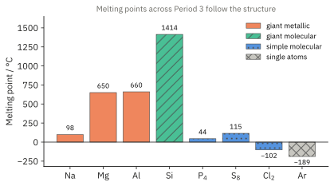
Lattice structures of crystalline solids
In a crystalline solid, the particles are arranged in a regular, repeating three-dimensional pattern called a lattice. 9476 names five types, depending on what the particles are and what holds them together. (The hydrogen-bonded lattice is a special kind of simple molecular lattice.)
| Type of lattice | Particles | Held together by | Examples |
|---|---|---|---|
| Giant ionic | Positive and negative ions | Ionic bonds (strong) | NaCl, MgO |
| Giant metallic | Positive ions and delocalised electrons | Metallic bonding (strong) | Cu, Na, Fe |
| Giant molecular (giant covalent) | Atoms | Covalent bonds throughout (strong) | Diamond, graphite, SiO2 |
| Simple molecular | Molecules | Intermolecular forces: id-id or pd-pd (weak). Covalent bonds within the molecules. | I2, CO2(s) |
| Hydrogen-bonded | Molecules | Hydrogen bonds between the molecules (weak, but the strongest intermolecular force) | Ice |
Giant ionic: sodium chloride and magnesium oxide
In sodium chloride, each Na+ ion is surrounded by 6 Cl− ions, and each Cl− by 6 Na+ ions, in a cubic arrangement. Magnesium oxide has the same arrangement, with Mg2+ and O2− ions. The attraction between doubly charged, smaller ions is much stronger, so MgO has a much higher melting point (2852 °C against 801 °C).
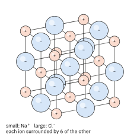
Simple molecular: iodine
Solid iodine is a lattice of I2 molecules. Within each molecule the two atoms are joined by a strong covalent bond; between the molecules there are only weak id-id forces. So iodine is soft, melts at only 114 °C, and when warmed gently it turns directly into a purple vapour (it sublimes).
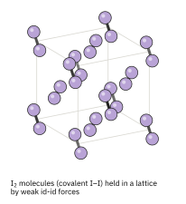
Hydrogen-bonded: ice
Ice is a simple molecular lattice in which the molecules are held by hydrogen bonds, each O tetrahedrally surrounded by four others (Fig 6). Compare the tetrahedral arrangement of water molecules in ice with the tetrahedral arrangement of carbon atoms in diamond. In diamond every link is a strong covalent bond; in ice the links between molecules are hydrogen bonds, which is why ice melts at 0 °C.
Giant molecular: diamond and graphite
Elements such as carbon and silicon, and compounds such as silicon dioxide, exist as giant molecular structures, in which every atom is joined to its neighbours by strong covalent bonds. Carbon is a frequently discussed example. It is hard to believe that one element could exist in two such vastly different forms. The differences are reflections of the different bonding and arrangement of atoms in the two structures.
- In diamond, each carbon atom is bonded tetrahedrally to four other carbon atoms by strong covalent bonds, in a three-dimensional network.
- In graphite, each carbon atom is bonded to three other carbon atoms in flat layers of hexagons. The fourth outer electron of each carbon is delocalised over the layer. The layers are held to each other only by weak id-id forces.
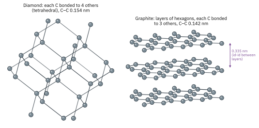
The strong covalent bonds are difficult to break in both structures, so both have extremely high melting points (graphite does not melt at all at atmospheric pressure; it sublimes at about 3650 °C). The strength of the bonds, in all three directions, also explains why diamond is one of the hardest substances there is. Moreover, it is difficult to distort the bonds at all without breaking them: diamond is brittle as well as hard.
Graphite is soft. This is a little surprising at first sight. The carbon atoms are held in covalently bonded (intra) layers, but the forces between one layer and the next are weak id-id forces. These are overcome first, the layers slide over each other easily, and graphite is soft and slippery: it is used as a lubricant and in pencils.
The unusual bonding in graphite accounts for another property which it certainly does not share with diamond. In diamond, all four outer electrons of each carbon are held in localised covalent bonds, so diamond does not conduct electricity. In graphite, each carbon forms only three bonds, and the fourth electron is delocalised over the layer. These delocalised electrons can move and carry charge along the layers, so graphite conducts electricity (along the layers, but not between them).2
Giant metallic: copper
In copper, the positive ions are packed as closely as possible, each touching 12 nearest neighbours, and the whole lattice is held together by the sea of delocalised electrons.
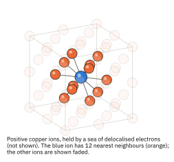
Bonding and physical properties
| Property | Giant ionic | Giant metallic | Giant molecular | Simple molecular |
|---|---|---|---|---|
| Melting and boiling points | High | Usually high | Very high | Low |
| Electrical conductivity | Only when molten or in aqueous solution (mobile ions) | Good, as solid and liquid (mobile delocalised electrons) | None (graphite is the exception) | None, in any state |
| Solubility | Often soluble in water; insoluble in non-polar solvents | Insoluble (some react with water) | Insoluble in all solvents | Usually soluble in non-polar solvents; soluble in water if they can hydrogen-bond with it |
| Mechanical | Hard but brittle | Malleable and ductile | Very hard (diamond); graphite soft | Soft |
Melting and boiling points
Ionic compounds have high melting points because a lot of energy is needed to overcome the strong electrostatic attractions between the oppositely charged ions throughout the lattice. Giant molecular substances have very high melting points because strong covalent bonds must be broken. Metals usually have high melting points (strong metallic bonding), although the most electropositive metals, the ‘best’ metals in chemical terms, melt quite low (Na 98 °C, K 63 °C). In fact, the electropositive metals do not show many of the characteristics we associate with everyday metals like steel.
Simple molecular substances have low melting and boiling points because much less energy is needed to overcome the weak intermolecular forces (id-id, pd-pd, hydrogen bonds) between the individual molecules.
Electrical conductivity
To conduct, a substance needs charged particles that are free to move. Metals conduct as solids and liquids, because their delocalised electrons are mobile in an electric field. The mobility of the delocalised electrons also makes metals good conductors of heat: where the metal is hot, the vibrating ions pass energy to the electrons, which carry it quickly to cooler parts of the lattice.
There are no mobile ions or electrons in an ionic lattice, so ionic compounds do not conduct in the solid state. When molten or dissolved in water, the ions are free to move and carry charge, so they conduct. In no state do simple molecular substances contain mobile electrons or ions, so they do not conduct electricity.
Hardness, brittleness and malleability
Ionic compounds are hard but brittle. The strong attractions hold the ions firmly in place. But if a force moves one layer of ions relative to the next, ions of the same charge are brought next to each other. They repel, and the crystal splits apart.
Metals are malleable and ductile: they can be hammered into different shapes, or stretched into wires. There are no rigid, directional bonds. Layers of ions can slide into new positions and the sea of delocalised electrons still holds them together. Nevertheless, the bonding must not be thought of as weak overall.
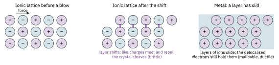
Simple molecular crystals such as iodine, naphthalene and ice are soft, because the weak forces between one molecule and another are fairly easily overcome.
Solubility
The adage that “like dissolves like” holds true. A substance dissolves if the attractions between its particles and the solvent molecules can make up for the attractions that have to be broken, both within the solute and within the solvent.
- Ionic compounds and water. Water molecules are polar. Several of them cluster around each ion at the surface of the lattice: the δ− oxygen atoms face the cations and the δ+ hydrogen atoms face the anions. These ion-dipole attractions release energy (hydration), and it is the combined attraction of several water molecules for each ion that can overcome the strong ionic bonding and pull the ion away. The solution contains mobile ions, so it conducts. (Not all ionic compounds are soluble. For CaCO3 and AgCl, the energy released when the ions are hydrated does not make up for the energy needed to break up the lattice.)
- Ionic compounds and non-polar solvents. The attraction of non-polar solvent molecules (such as hexane) for ions is so weak that even large numbers of them cannot pull the ions away. Ionic compounds are insoluble in non-polar solvents.
- Simple molecular substances. Non-polar molecules, such as I2 and naphthalene, dissolve well in non-polar solvents, where both the solute-solute and the solvent-solvent attractions are weak id-id forces, easily replaced by solute-solvent id-id forces. They dissolve poorly in water, because water molecules are strongly hydrogen-bonded to each other and would have to be separated for little gain. Molecules that can hydrogen-bond with water, such as ethanol, glucose and ammonia, are very soluble in it.
- Giant molecular substances do not dissolve in any solvent: every atom is held by strong covalent bonds.
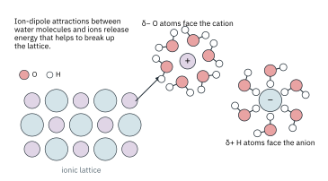
Deducing structure and bonding from properties
You may be given data for an unfamiliar substance and asked to suggest its structure and bonding. Work through the evidence in this order.
- Does it conduct as a solid? Yes: giant metallic (or graphite).
- Does it conduct only when molten or in aqueous solution? Yes: giant ionic.
- No conduction in any state, and a very high melting point; insoluble in everything? Giant molecular.
- No conduction, low melting and boiling points? Simple molecular. Then use the solubility and the boiling point to decide what the intermolecular forces are.
Additional information
- The older version of this note compared the lattice and lustre of silicon with those of a metal. Silicon’s lustre and semiconductivity are real, but its structure is the diamond structure and its bonding is covalent; its conductivity is very low compared with a metal and rises with temperature. ↩
- The older version of this note described the atoms in diamond and graphite as sp3 and sp2 hybridised. Hybridisation is now in Topic 11.1. ↩